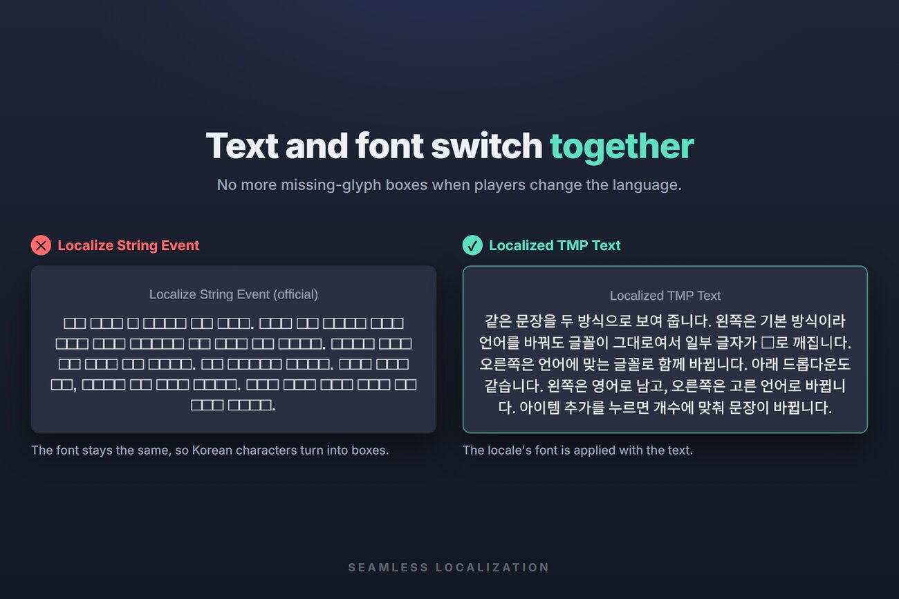
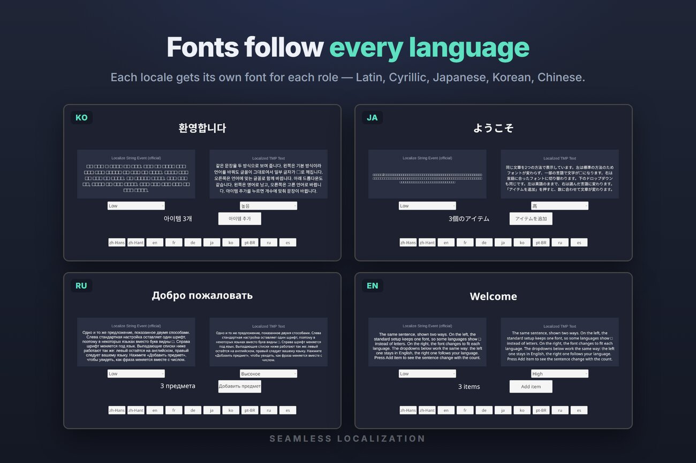
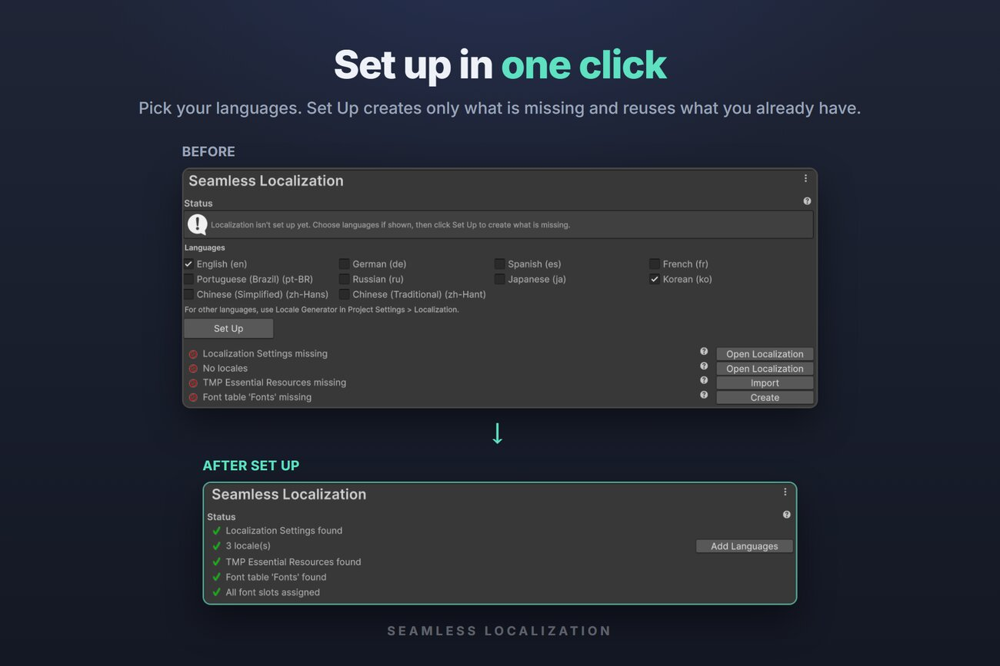
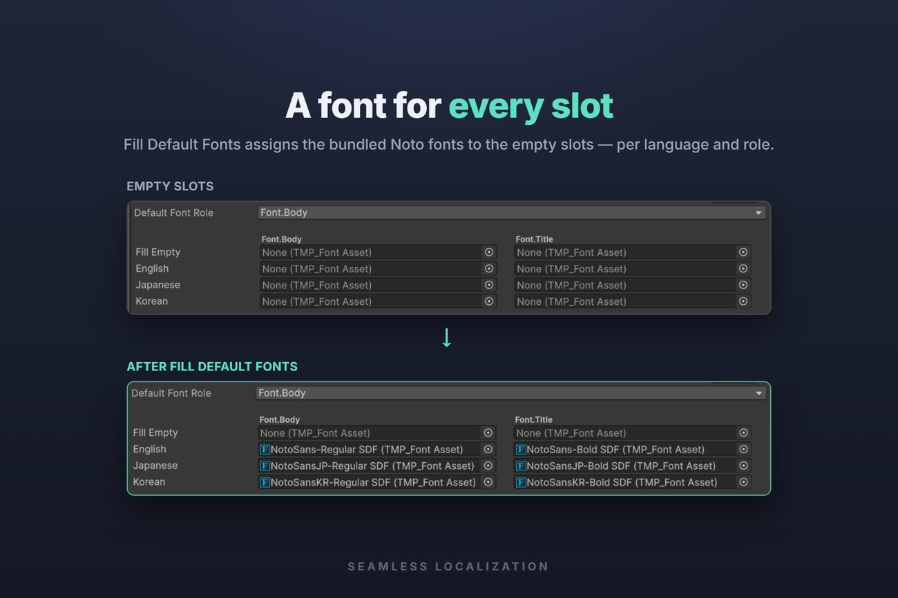
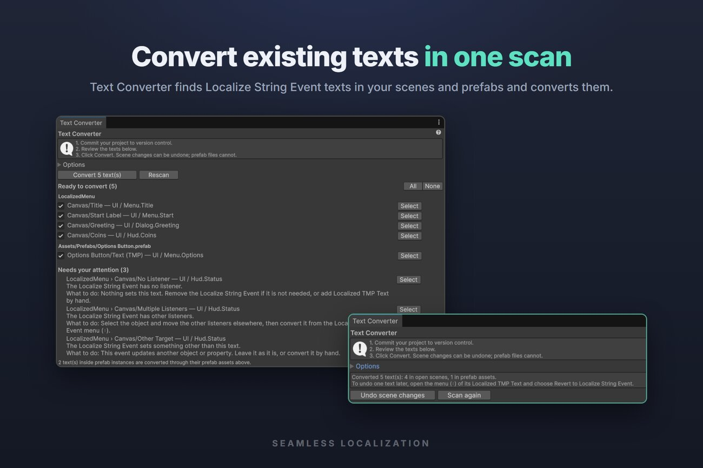
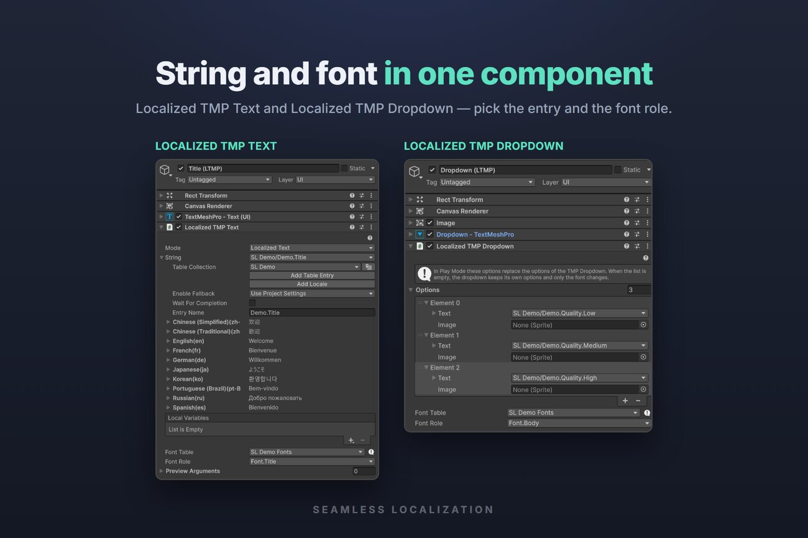
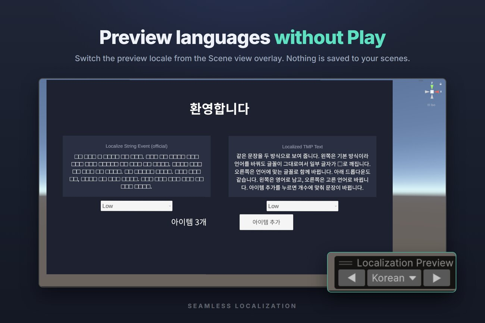
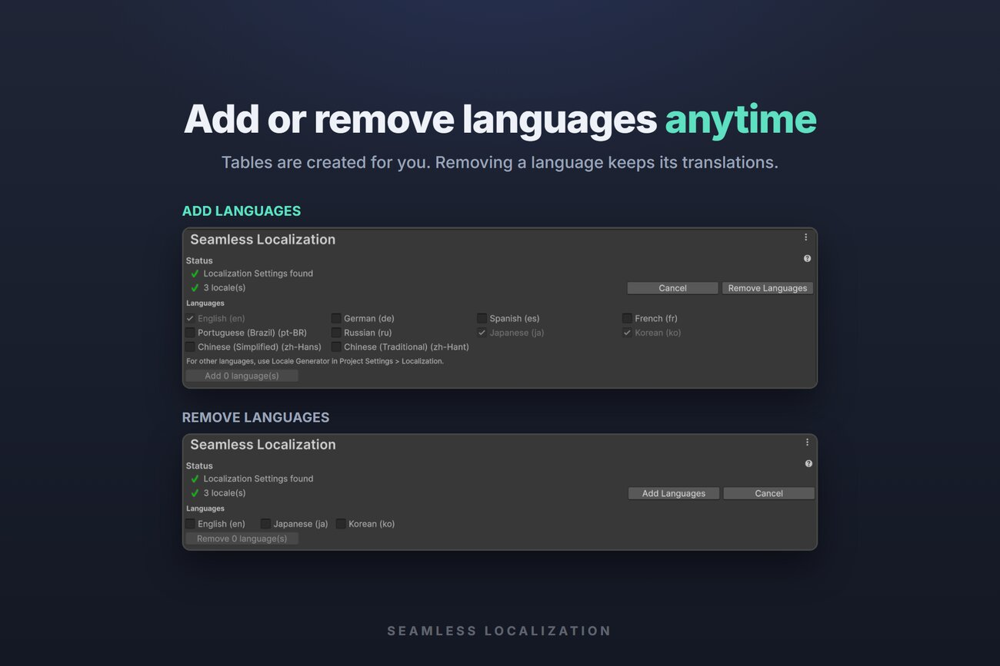

Your game is translated, but the moment players switch to Japanese, Korean, or Chinese, the text turns into □□□. Seamless Localization extends the official Unity Localization package so the text and the locale's font are applied together — no flicker, no missing glyphs.
Localized TMP Text & DropdownThe string and the locale's font in one component, applied together. Dropdown options switch with the language and keep the selection.
One-click setupSet Up creates only what is missing. Fill Default Fonts assigns bundled Noto fonts for Latin, Cyrillic, Japanese, Korean, and Chinese.
Works with existing projectsText Converter finds Localize String Event texts in scenes and prefabs and converts them in one scan.
Editor workflowPreview any language in the Scene view without Play. Dynamic font assets stay unchanged in version control.
Screenshots








Requirements
Unity 6000.0 or later · Localization 1.5.13 or later · Unity UI 2.0.0 or later (includes TextMesh Pro). Tested with URP.